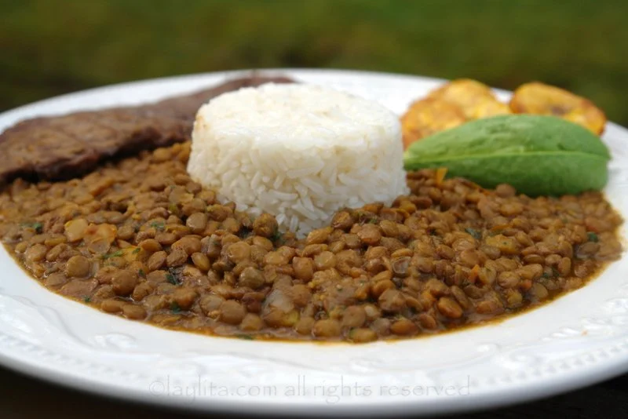

Menestra de lenteja

The menestra de lenteja is a stew made with lentils and usually acompannied with withe rice
The menestra de lentejas is a typical dish served in all over latinamerica, it only needs some lentils, rice and some spices.
Ingredients
- Lentils
- water
- onions
- garlic
- salt
- green platanes
- Cut the onions and garlic
- fry both of those wiht salt
- fry the lentils with the onions and the garlic
- Now add the water
- Let the lentils cook until they soften
- after they're soft add the green platanes grated
- wait unitll the platanes are done and that's it